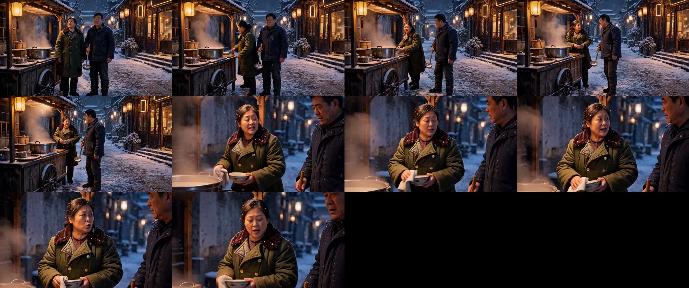
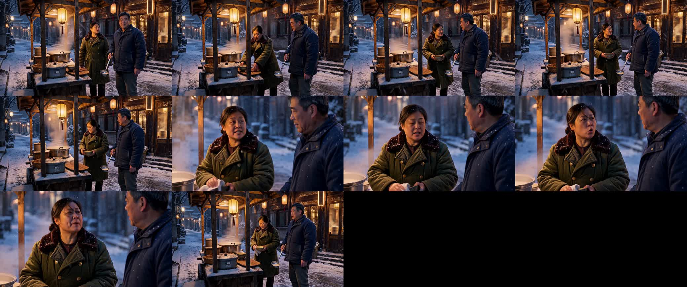

三路配置与 prompt
| 路 | prompt 来源 | 字数 | steps | transition_step | seed 尾6位 | seed 来源 | scheduler |
|---|---|---|---|---|---|---|---|
| 原版 #53 · e5d3d6724d | prompt.txt.bak（旧版全文）md5 f1ed33797ba1 | 6124 | 10 | 6 | 025885 | 回退模板固定值 | beta |
| 新 qwen #58 · 4ea4ba9b90 | prompt.txtmd5 245e41342838 | 3997 | 10 | 6 | 025885 | 回退模板固定值 | beta |
| 新 deepseek #58 · 05cc00f0c7 | prompt_ds.txtmd5 8a4fa10bd351 | 5590 | 10 | 6 | 025885 | 回退模板固定值 | beta |
「原版」= 批次 #53 实际下发的旧版全文（即现 assets 目录下
prompt.txt.bak）；「新 qwen / 新 deepseek」= 批次 #58 两路，取自
prompt.txt / prompt_ds.txt。三版全文已按 md5 与 executed_prompt 逐一核对命中。
风雪描述对照（executed_prompt 原文，按句摘出）
| 原版 14 句 | 新 qwen 9 句 | 新 deepseek 11 句 |
|---|---|---|
| <Subject 1> is the snowy night street scene from <Picture 1>: a traditional Chinese baozi shop with glowing amber lanterns and stacked bamboo steamers on the right, a wooden porridge cart with a small canopy and steaming pot on the left, cobblestones dusted with snow, heavy falling snowflakes, and a distant paifang archway receding into the dark. | <Subject 1> is the scene 十五年前高档酒楼门外的包子铺与街边粥摊 from <Picture 1>: a wooden porridge cart with steaming pots and a lantern at screen left, snow-covered cobblestones, and a warm-lit restaurant frontage with stacked steamer baskets at screen right. | <Subject 1> is the snowy night street outside the high-end restaurant from <Picture 1>: at the left of frame the street-side porridge cart with its wooden canopy, hanging lantern, steaming pot and countertop, a snow-covered street receding into the distance, and at the right of frame the warm-lit restaurant façade with lattice doors, hanging lanterns and stacked bamboo steamers. |
| A 15-second vertical realistic short-drama sequence set at the snowy night porridge cart of <Subject 1>. | [reference generation] In a snowy night outside the restaurant and porridge stall, <Subject 2> and <Subject 3> remain beside the cart at screen left. | [reference generation] Night, heavy wind-driven snow outside the high-end restaurant, where the street-side porridge cart glows under its lantern at the left of frame. |
| The final cut returns to the two-shot: <Subject 3> sighs and turns his gaze into the deep snowy street while <Subject 2> continues stacking bowls under the stubborn amber glow of the cart lantern. | The final double medium shows <Subject 3> sighing and looking into the snow while <Subject 2> finishes stacking bowls under the stubborn stall light. | A cut to a medium-close shot with a slow push-in shows her wiping a porcelain bowl as her face hardens from sorrow into plain resolve while she repeats her reassurance; then a cut back to the two-person medium shot, where 陈大爷 grips the ladle in silence, sighs, and slowly turns his head toward the snowy street deep at the left of frame while she keeps stacking bowls and the amber stall light burns on. |
| <Subject 1> (appears in [Shot 1, Shot 2, Shot 3]): fully_preserved - the baozi shop, porridge cart, lanterns, steamers, snowfall, and paifang archway remain as the continuous environment throughout all three shots. | Night snowstorm in <Subject 1>. | <Subject 1> (appears in [Shot 1, Shot 2, Shot 3]): fully_preserved - the night street, the falling snow, the porridge cart at the left of frame with its canopy, lantern and steaming pot, and the warm-lit restaurant façade with lanterns and steamers at the right stay as pictured; the storm is the source's own condition. |
| The scene is <Subject 1> at night: heavy snow falls, amber lanterns on the baozi shop glow warm against the blue-dark sky, steam rises from the porridge pot on the wooden cart. | <Subject 2> and <Subject 3> stand beside the porridge cart at screen left, their established left-right relationship intact; the distant brother and sister remain hidden in the snow and do not enter frame. | [Shot 1] Photoreal live-action short-drama footage, natural skin and fabric texture, real reflections and refractions in the trodden snow, high-end film grain; fixed two-person medium shot at night in heavy wind-driven snow outside the high-end restaurant. |
| The only sounds are the howling wind and the light clink of ceramic bowls and chopsticks. | Snow brushes loose strands at her temples. | The porridge cart of <Subject 1> holds the left of frame with its wooden canopy, glowing lantern, steaming pot and countertop bowls; the snow-covered street recedes beyond it and the warm-lit restaurant façade glows at the right of frame. |
| Snowflakes drift past her temples and the loose strands of her hair. | <Subject 3> grips the ladle and silently watches <Subject 2> working beside him, his furrowed brow heavy with concern; he exhales, slowly turns his head, and looks into the snowy street at screen left. | No other figure appears anywhere on the street - the distant brother and sister are lost in the storm and stay out of frame; no subtitles, watermarks or logos appear, and the line is spoken exactly and completely as written. |
| Faint steam from the porridge pot curls behind her shoulder; wind-driven snow whispers across the frame. | The warm stall light glows stubbornly through the blizzard. | [Shot 2] At 00:06.000, cut to a medium-close shot of <Subject 2> with a slow, small push-in: wind-driven snow sweeps past the loose strands at her temples as she wipes a porcelain bowl with both hands, quick and capable, her face hardening from the first sting of sorrow into plain, stubborn resolve. |
| He exhales a long, slow sigh, then turns his head away from <Subject 2>, directing his gaze toward frame-left into the deep snowy street where the distant paifang archway fades under falling flakes. | The bed is cold wind and falling snow, with clear determined Mandarin dialogue from <Subject 2>, light ceramic clinks as bowls and chopsticks are handled, a faint hiss of steam, and a dull thud of stacked bowls; no non-diegetic music. | [Shot 3] At 00:11.500, cut back to the two-person medium shot, camera fixed: <Subject 3> grips the ladle tightly and watches her in silence, his wrinkled forehead knotted, as <Subject 2> keeps stacking the bowls briskly behind the cart and the amber stall light burns stubbornly through the storm. |
| The amber lantern glow of the cart holds stubbornly against the swirling snow. | — | <Subject 3> lets out a long sigh, then slowly turns his head and looks deep into the snowy street at the left of frame, his face settling into grave, tacit assent, while <Subject 2> finishes stacking the bowls on the wooden board, her eyes calm and resilient. |
| The only sounds are wind sweeping snow and the dull thud of stacked bowls on wood. | — | Howling wind drives the snow across the street over a thin hiss of steam from the porridge pot, with the faint clink of coarse ceramic bowls and chopsticks being cleared and the dull thud of bowls laid down on wood; 陈大爷's long exhaled sigh sits low beneath the wind. |
| A continuous bed of howling winter wind and fine snow patter fills all three shots. | — | — |
| Shot 2 adds a faint hiss of residual steam from the porridge pot and the soft whisper of wind across the close frame. | — | — |
| Shot 3 returns to the broader wind with a single dull wooden thud as <Subject 2> stacks the last bowl. | — | — |
逐句对齐仅为排版，三版句序不同；看差异重点：风雪强度词 （snowfall / night snowstorm / heavy wind-driven snow）、风向与运动 （drift / sweep / drive）、雪与人物/光的关系（snow brushes temples / lantern glow through blizzard）。
耗时与高频能量
| 路 | server(s) | wall(s) | queue(s) | vs 原版 | 高频能量 |
|---|---|---|---|---|---|
| 原版 | 464.5 | 471.9 | 3.4 | 基准 | 2.6410 |
| 新 qwen | 445.3 | 451.3 | 3.0 | -4.1% | 2.9209 |
| 新 deepseek | 447.5 | 454.1 | 2.9 | -3.7% | 2.6004 |
高频能量 = 首帧拉普拉斯方差归一，越大边缘/颗粒越多； 三路配置与 seed 相同，该列差异只来自 prompt 引发的画面内容差异。
同刻三路并排（1x3）
左 原版 #53
中 新 qwen #58
右 新 deepseek #58
各路全程 12 帧



三路视频同步播放
看片结论
- 原版（左）风雪感最弱：全景空中落雪几乎不可见、地雪平滑发亮，近景肩发雪点明显少于两新版。其 14 句风雪描述多为静态背景句（heavy snow falls / snowflakes drift past her temples），缺方向与力度词。
- 新 qwen（中）蒸汽与颗粒最强（高频能量 2.92，三路最高）：9 句里用集中的力度表述（Night snowstorm / cold wind and falling snow），但积雪与吹雪纹理弱于 deepseek。
- 新 deepseek（右）风驱雪与积雪最明确：全景屋檐、摊顶积雪和街道湿雪纹理最清楚，近景人物肩、发雪点明显。对应原文 wind-driven snow sweeps past the loose strands、trodden snow... reflections and refractions 这类「运动+材质」词。
- 句数 ≠ 画面强度：原版风雪句最多（14）而画面最弱；决定效果的是力度/方向/材质词（wind-driven / sweep / trodden / reflections），不是提及次数。
- 三路同 seed 同配置仍分叉（摊位位置、人物站位不同）——因三版 prompt 自身的构图描述不同（原版 steamers on the right / qwen at screen left / deepseek at the left of frame），属描述差异带来的分叉，不是随机性。